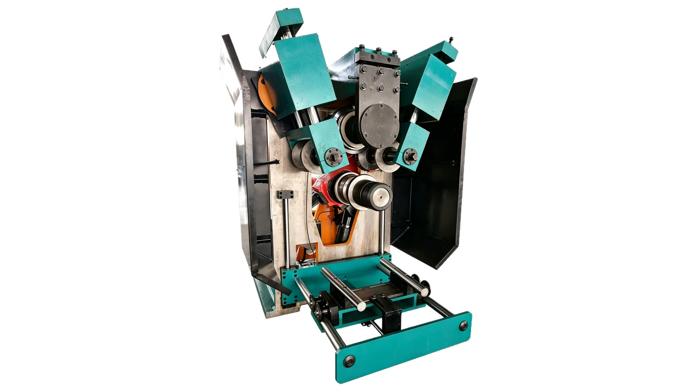

Complementary Machines
The stations that complete a rim line.

Rim making · forming
Bicycle and Motorcycle Roll Forming Machine
Forms two-wheeler rim sections from strip before the flash butt weld.

Rim making · forming
Rim Roll-Forming Machine
Rolls the welded blank into the finished rim profile.

Rim making · flaring
Hydraulic Rim Flaring Machine
Expands the rim to final diameter and corrects roundness.

Rim making · spinning
Wheel Spoke Spinning Machine
Spins the disc that is then welded into the rim.